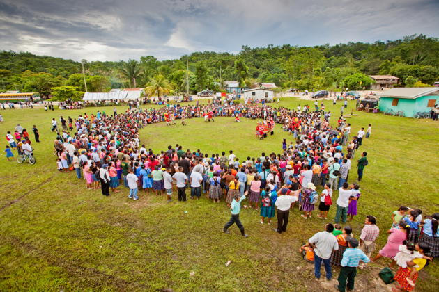
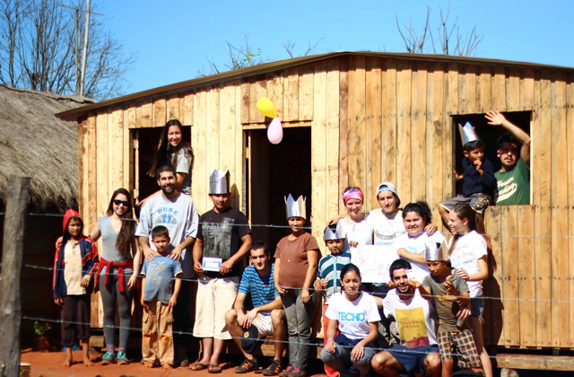
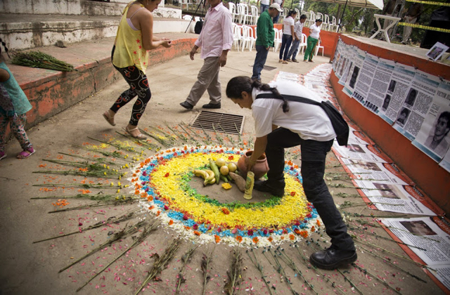

Fighting for Indigenous Land Rights
Focused on land rights, forest management, and environmental conservation, UNDP Equator Prize 2015 winner Maya Leaders Alliance has successfully campaigned on land rights for 39 Q’eqchi and Mopan indigenous communities in southern Belize, marking the first indigenous peoples’ land rights legal victory in the Caribbean region. Pictured, members of Maya Leaders Alliance join in celebration of the legal victory.
LATIN AMERICA AND THE CARIBBEAN
Latin America and the Caribbean starts the new era of the Sustainable Development Goals having learned from the previous Millennium Development Goals, most of which were met in the region. Now, to continue to advance on social, economic, and environmental fronts, the region needs to put into practice a new generation of public policies that also close historical gender, ethnic, and racial gaps.
The region is more prosperous and less poor and unequal than in recent history. It was the only region in the world that managed to reduce income inequality during the first decade of the 21st century. It added 90 million people to an emerging middle class between 2000 and 2012, and some of the region’s countries rank among the world’s top economies.
However, despite all the progress, Latin America and the Caribbean is home to 10 of the world’s 15 most unequal countries. UNDP’s regional Human Development Report, launched in June 2016, calls for boosting resilience to prevent the one in three Latin Americans who left poverty behind fall back into poverty. It also makes the case for rethinking the region’s development model, drawing inspiration from the 2030 Agenda for Sustainable Development. “Nothing that reduces the rights of people and communities or threatens environmental sustainability can be considered progress,” the report says.
Poor people—especially women—suffer disproportionately from climate change, natural disasters, and irreversible changes to ecosystems, which decrease their options for income and well-being. This is especially true for Latin America and the Caribbean, the world’s second-most disaster-affected region.
Some countries in Central America are facing extreme levels of violence and insecurity that hinder progress towards the SDGs. UNDP supports programmes that promote an integrated approach across the justice system and foster prevention measures, crime reduction, and reintegration-related actions. The Caribbean region also faces a surge in criminality where UNDP works with partners to address emerging challenges and promote informed decision-making.
UNDP is proud to work with countries, civil society, and the private sector to secure hard-won social, economic and environmental gains, and to continue improving the lives of all women and men.

COUNTRY SNAPSHOTS

Belize
TonyRath.com

Paraguay
Techo Paraguay
Lending a Hand to Build Homes
In Paraguay, 939 national and 2,429 Chilean volunteers helped to build more than 600 houses with funding and knowledge-sharing from the Chile Fund Against Hunger and Poverty, a joint initiative of UNDP and the Government of Chile to promote development cooperation. Aside from the work in Paraguay, the Fund has, since its founding in 2013, awarded close to $7 million to “South-South cooperation” projects in 24 countries throughout Latin America, the Caribbean, Africa, and the Pacific, as well as two regional projects. The Fund has also fast-tracked an additional $845,000 to support humanitarian responses to crises worldwide.

Colombia
UNDP
Building an Inclusive Peace
UNDP supported Colombia, hindered by more than 50 years of armed conflict, in restoring peace. For the October 2015 local elections, UNDP partnered with 80-plus civil society organizations nationwide on a campaign to unite Colombians and rebuild the country’s social fabric. We also continued to support the participation of victims in the peace talks between the Government and the Revolutionary Armed Forces in Colombia (FARC). Pictured, a man visits the El Castillo Memory Park.
 Ecuador
UNDP
Ecuador
UNDP
Coming Back to Life After Devastation
Immediately after Ecuador’s April 2016 earthquake, UNDP sent disaster management experts and provided funds to remove debris, repair community infrastructure, and put affected communities at the centre of the reconstruction process. UNDP also collected donations from the public and promoted a star-studded benefit concert in Miami to help the country rebuild.
 Brazil
UNDP
Brazil
UNDP
Celebrating Indigenous Heritage and Traditions
A man shoots arrows in the first-ever World Games of Indigenous Peoples, which brought together 2,000 athletes from 40 indigenous groups worldwide. Athletes travelled to Brazil to participate in such traditional indigenous sporting events as log race, tug-of-war, and bow and arrow. UNDP was a major supporter of the event, which recognized indigenous heritage and traditions.